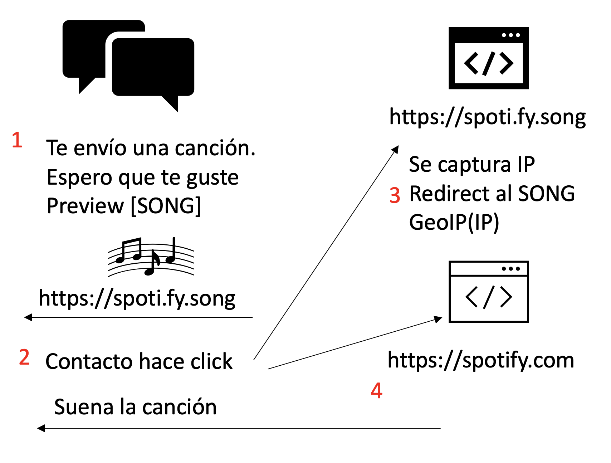

The trick to know where a person is located, for example to know where a WhatsApp contact lives, or where someone is at a specific moment, they have known each other for a long time doing the same thing, that is, making a contact click on a link that you send through the chat and that leads to a controlled web server where the IP address is captured.
